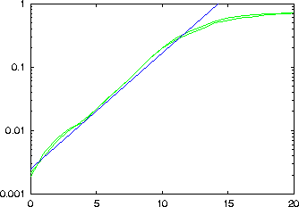

Provides data for a scaling plot that can be used to determine the largest Lyapunov exponent of a scalar time series. The output file file_lyap contains the time seperation and the averaged phase space distance. Results for consecutive values of the embedding dimension are seperated by double blank lines.
-d delay
-m minimal embedding dimension
-M maximal embedding dimension
-t minimal time separation
-r diameter of initial neighbourhoods
-s time steps over which expansion is followed (100)
-n minimal number of reference points (all)
-k minimal number of neighbours for reference points (10)
-l number of values to be read (all)
-x number of values to be skipped (0)
-c column to be read (1 or file,#)
-o output file name, just -o means file_lyap
-V verbosity level (0 = only fatal errors)
-h show this message
This routine is based on
H. Kantz,
A robust method to estimate the maximal Lyapunov exponent of a time series,
Phys. Lett. A 185, 77 (1994).
> henon -l10000 > data > lyapunov -d1 -m2 -M3 -t50 -r0.005 -s20 data -o gnuplot> set logscale y gnuplot> set yrange [0.001:1] gnuplot> plot 'data_lyap', exp(0.42*x)/400
